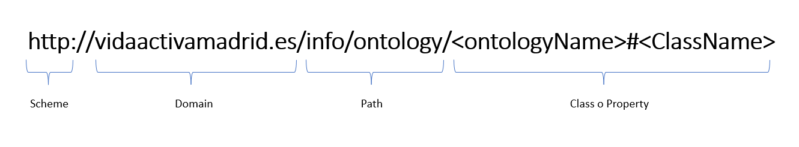

2. Analyze Licensing of the Data Source
Publisher:
Both data source are own by Ayuntamiento de Madrid. However, they're managed by different department.
Agenda de actividades y eventos:
Dirección General de Atención a la Ciudadanía
Áreas de actividades para mayores:
Dirección General de Servicios de Limpieza y Residuos
Condition of use:
Since the data sources are in public domain they don't have a specific license. However, there are terms of use set by the Ayuntamiento de Madrid that have to be followed:
- We can reuse all the documents and data for commercial and non-commercial purposes.
- It is forbidden to distort the meaning of the information.
- Citation is required.
- The latest update date has to be mentioned.
- We can not suggest or insinuate that Ayuntamiento de Madrid participates or support the reuse of the information.
- The terms of use can't be altered.
- It's expressly prohibited to carry out re-identificaiton of inidividuals, in case of information containing personal data.
License to be used:
Since the data source is in the public domain, we must adhere to the terms of use set by the Ayuntamiento de Madrid regarding the data's use for application development. This stipulates that we have to submit a form on their website to obtain approval to publish the application.
3. Define Resource Naming Strategy
For the URIs, we'll use separate paths for ontology resources and individuals, using hash for ontological terms and slash for individuals.
URI for Ontological resources:
URI for Individuals: